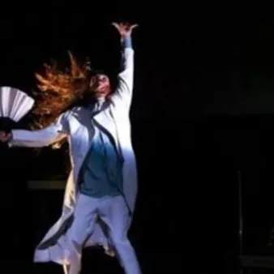

da mar 1 set a gio 10 set
L'Arlecchino Errante 2026
Un’unica manifestazione con 7 appuntamenti raccolti e ordinati nel programma completo.
 Indicazioni
Indicazioni
- Costi e prenotazioni
- Costo non indicato · Prenotazione non indicata
- Programma
- Programma raccolto. Gli appuntamenti delle diverse schede sono riuniti in questa pagina.
- In caso di maltempo
- Nessuna indicazione specifica pubblicata.
- Note
- Le schede dei singoli appuntamenti sono state unite nella manifestazione principale.
L’EVENTO
Descrizione completa
Quest'anno l'edizione è storica, dal momento che il festival compirà trent'anni. Si continua sulla linea e la ricerca delle sonorità, e dopo l'edizione passata "Lingue e silenzi", quest'anno arriva "Suoni e sentimenti". Spettacoli, workshop, e performance programmati nelle vie del centro cittadino, presso l'ex convento di San Francesco, presso il Capitol e molti altri luoghi della città di Pordenone. Programma completo. Info festival https://arlecchinoerrante.com/
Organized by: L'Arlecchino Errante - Scuola Sperimentale dell'Attore Tel: +39 3518392425 (info e Prenotazioni) E-mail: festival@arlecchinoerrante.com
Una performance che unisce musica, recitazione e danza, fuse insieme e tese a un medesimo scopo: riflettere sull’essenza della vita e dell’arte. Hamlet Puppet trasforma il capolavoro di Shakespeare in uno spettacolo di teatro fisico pop e potente, dove i personaggi diventano marionette umane mosse da fili invisibili. Gli attori e i danzatori si muovono con la precisione drammatica e la frenesia di pupazzi meccanici, spezzati dai propri dubbi ed emozioni.
: € 10 – under 25, over 60, possessori del biglietto intero di uno spettacolo precedente
: € 5 – under 12, soci titolati scuola sperimentale dell’attore, possessori di un biglietto ridotto di uno spettacolo precedente
: € 1 – colleghi teatranti e artisti in genere, disoccupati, persone diversamente abili e possessori di un biglietto super ridotto di uno spettacolo precedente
Compagnia Balletto Civile / Italia di e con Michela Lucenti e con Michele Calcari immagini Giorgina Pi musiche Paolo Spaccamonti disegno sonoro Tiziano Scali supervisione sonora Valerio Vigliar assistente alla creazione Maurizio Camilli Una performance che unisce musica, recitazione e danza, fuse insieme e tese a un medesimo scopo: riflettere sull’essenza della vita e dell’arte. Hamlet Puppet trasforma il capolavoro di Shakespeare in uno spettacolo di teatro fisico pop e potente, dove i personaggi diventano marionette umane mosse da fili invisibili. Gli attori e i danzatori si muovono con la precisione drammatica e la frenesia di pupazzi meccanici, spezzati dai propri dubbi ed emozioni. Ingresso: Intero : € 15 Ridotto : € 10 – under 25, over 60, possessori del biglietto intero di uno spettacolo precedente Super Ridotto : € 5 – under 12, soci titolati scuola sperimentale dell’attore, possessori di un biglietto ridotto di uno spettacolo precedente Extra Ridotto : € 1 – colleghi teatranti e artisti in genere, disoccupati, persone diversamente abili e possessori di un biglietto super ridotto di uno spettacolo precedente
Giovanni Consoli, Margherita Costantini, Luca Di Giusto, Angelica Margherita, Andrea Rizzo
è il miraggio di un giovane viaggiatore che esplora dentro di sé un nuovo racconto. Il progetto intende valorizzare le professionalità attive nei settori dell’editoria, della rilegatoria e delle arti affini, con un’attenzione particolare alla dimensione artigianale e manifatturiera.
€ 1 per tutti, con procedimento “self” presso le casse volanti
Arearea / Italia Coreografia Marta Bevilacqua Danzatori Giovanni Consoli, Margherita Costantini, Luca Di Giusto, Angelica Margherita, Andrea Rizzo Musiche Anna Müller, Ceeys, Trinix & Mariana Froes, Weval Le vie di carta è il miraggio di un giovane viaggiatore che esplora dentro di sé un nuovo racconto. Il progetto intende valorizzare le professionalità attive nei settori dell’editoria, della rilegatoria e delle arti affini, con un’attenzione particolare alla dimensione artigianale e manifatturiera. Ingresso Solidale: € 1 per tutti, con procedimento “self” presso le casse volanti
Coreografia Marta Bevilacqua Danzatori Giovanni Consoli, Margherita Costantini, Luca Di Giusto, Angelica Margherita, Andrea Rizzo Musiche Anna Müller, Ceeys, Trinix & Mariana Froes, Weval
L’evento “MOVIC – Movie is Music” prevede la proiezione del documentario
, diretto da Ivan Gergolet, dedicato alla figura della ballerina e coreografa argentina Maria Fux, pioniera di un metodo che ha trasformato la danza in uno strumento di espressione, comunicazione e inclusione, aperto a persone di ogni età e abilità. Nel corso dell’evento è previsto un intervallo con brunch presso lo Spaziozero.
Posti limitati. Prenotazione obbligatoria, con ticket per il brunch € 15
IL PROGRAMMA
Programma e orari
Le singole date appartengono alla stessa manifestazione. Ogni sede verificata dispone delle proprie indicazioni.
Sabato 5 settembre · L'arlecchino Errante 30 - Hamlet Puppet
Pordenone · Ex Convento San Francesco - Chiesa
- Compagnia Balletto Civile / Italia di e con Michela Lucenti e con Michele Calcari immagini Giorgina Pi musiche Paolo Spaccamonti disegno sonoro Tiziano Scali supervisione sonora Valerio Vigliar assistente alla creazione Maurizio Camilli Una performance che unisce musica…
Sabato 5 settembre · L'arlecchino Errante 30 - Le vie di carta. Sul viaggio
- Arearea / Italia Coreografia Marta Bevilacqua Danzatori Giovanni Consoli, Margherita Costantini, Luca Di Giusto, Angelica Margherita, Andrea Rizzo Musiche Anna Müller, Ceeys, Trinix & Mariana Froes, Weval Le vie di carta è il miraggio di un giovane viaggiatore che esplora dentro…
Sabato 5 settembre · L'arlecchino Errante 30 - MOVIC. Movie is music
Pordenone · Cinemazero Sala Modotti e SpazioZero
- Dancing with Maria con Ivan Gergolet – regista Luca Ciut – compositore Paolo D’Andrea – attore L’evento “MOVIC – Movie is Music” prevede la proiezione del documentario Dancing with Maria, diretto da Ivan Gergolet, dedicato alla figura della ballerina e coreografa argentina Maria…
Sabato 5 settembre · L'arlecchino Errante 30 - Open Workshop "Introduzione al teatro danza indiano"
Pordenone · Palazzo Gregoris, sede della Società Operaia di Mutuo Soccorso e Istruzione Corso Vittorio Emanuele, 44
- con Kalamandalam Jhon … Per esempio il Kathakali. Del resto in tutte le forme sceniche indiani ci sono delle costanti: postura del corpo scultorea ed “artificiale”, trattamento verticale della forza di gravità, enorme lavoro degli occhi e delle mani, ritmo vissuto come…
Domenica 6 settembre · L'arlecchino Errante 30 - India Passion
Pordenone · p.zza XX Settembre – davanti al Teatro Verdi (in caso di pioggia Capitol Event Hall)
- Kalatharangini Kathakali Troupe / India danza Kalatharangini Ruby K John voce Kalamandalam Ajesh, Kalamandalam Jeevan percussioni Kalamandalam Sudheesh, Kalamandalam Rajanarayanan Ritmo potente di tamburi, grazia e precisione formale della danza, gesti ed espressività di rara…
Domenica 6 settembre · L'arlecchino Errante 30 - La stella dell'Arlecchino Errante
Pordenone · Ex Convento San Francesco - Chiostro (in caso di pioggia Chiesa)
- ore 16:30
- Ore 18:00
Domenica 6 settembre · L'arlecchino Errante 30 - Open Workshop "Corpi in ascolto"
Pordenone · Palazzo Gregoris, sede della Società Operaia di Mutuo Soccorso e Istruzione Corso Vittorio Emanuele, 44
- con Michela Lucenti e Maurizio Camilli Lo studio del corpo del performer come ampliamento delle possibilità di veicolo energetico. L’azione come incipit per il movimento danzato. Lo studio della relazione fisica con l’altro come forma necessaria per comprendere il senso del…
INFORMAZIONI UTILI
Prima di partire
- Controllare la fonte prima di partire.
ORGANIZZAZIONE